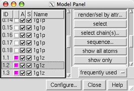

This tutorial focuses on using the Model Panel and handling ensembles of structures (such as those determined by NMR).
We will view solution structures of a toxin that binds to sodium channels. Separate ensembles were determined for cis- and trans-proline conformations of this toxin:
NMR solution structures of δ-conotoxin EVIA from Conus ermineus that selectively acts on vertebrate neuronal Na+ channels. Volpon L, Lamthanh H, Barbier J, Gilles N, Molgó J, Ménez A, Lancelin JM. J Biol Chem. 2004 May 14;279(20):21356-66.On Windows/Mac, click the chimera icon; on UNIX, start Chimera from the system prompt:
unix: chimeraA basic Chimera window should appear after a few seconds; resize it as desired. Open the Command Line (choosing Tools... General Controls... Command Line is one way).
If you have internet connectivity, structures can be obtained directly from the Protein Data Bank:
Command: open 1g1pIf you do not have internet connectivity, you can download the files 1g1p.pdb.gz and 1g1z.pdb.gz into your working directory and then open them in that order as local files (with File... Open). It is not necessary to uncompress the files.
Command: open 1g1z
Use the ribbons preset:
Menu: Presets... Interactive 1 (ribbons)This may or may not change the appearance, depending on your preference settings.
Rotate, translate, and scale the structures as desired throughout the tutorial. Optionally, use the Side View to scale the view and move the front and back clipping planes. There are several ways to start tools, including from the menu (in this case, Tools... Viewing Controls... Side View) or with a command:
Command: start Side View
Open the Model Panel:
Command: start Model PanelEach file of coordinates opened in Chimera becomes a model with an associated ID number and model color. Some PDB files are further subdivided into multiple structures designated with MODEL and ENDMDL records; these are assigned submodel numbers. Each structure can be specified independently by number (model.submodel) and handled just as if it were a separate model. Thus, the term "model" often indicates anything with its own line in the Model Panel, whether it is a submodel or a model not subdivided into submodels.
|  |
Each of these files contains an ensemble of 18 structures. 1g1p (trans-proline conformations, white) has been opened as models 0.1-0.18 and 1g1z (cis-proline conformations, magenta) as models 1.1-1.18.
At first, most of the functions on the right side of the Model Panel are grayed out because none of the models are chosen. Scroll down the list of models in the left side of the Model Panel and choose model 1.2 by clicking its ID or name. Try various functions:
show only - hide the other modelsBy default, ribbons suppress backbone atom display. Hide the ribbon to reveal the backbone atoms:
show all atoms - display all atoms
select - select the entire model for further operations
Menu: Actions... Ribbon... hideSelect and delete hydrogens in all models:
Menu: Select... Chemistry... element... HWhen atoms might be needed later, hide should be used instead of delete.
Menu: Actions... Atoms/Bonds... delete
Back to the Model Panel:
sequence... opens a sequence window for the model. Two very short β-strands (positions 24-25 and 29-30) are highlighted in light green. Placing the mouse cursor over a residue in the sequence shows the corresponding structure residue number at the bottom of the sequence window. The β-strand locations were read from the input file along with the coordinates. Highlight a string of residues in the sequence with the mouse and see how they become selected in the structure. Quit from the sequence window, then act on the selection with the menu: Actions... Color... cyanClear the selection (Ctrl-click in an empty area of the graphics window) and go back to showing only ribbons:
Menu: Presets... Interactive 1 (ribbons)Note the cyan coloring is gone; interactive presets reset the coloring, whereas publication presets do not adjust colors, aside from making the background white.
The ribbon shows the β-strands as arrows. Although the input file specifies the strand locations as 24-25 and 29-30, the paper describes three β-strands, comprised of residues 8-10, 23-26, and 28-31. Such differences are common because secondary structure assignments are method- and parameter-dependent. Secondary structure assignments could be recomputed with ksdssp, but if the desired assignments are already known, it is much more efficient to change them directly:
Command: setattr r isStrand falseThese commands assign values of the residue attribute named isStrand. The first command clears existing strand assignments, and the second reassigns the strands as reported in the paper. (There is also an isHelix attribute, but this structure does not contain any α-helices). Secondary structure assignments can also be changed by selecting residues and using the Selection Inspector.
Command: setattr r isStrand true :8-10,23-26,28-31
The strands can be emphasized with color:
Command: color blue #1.2(There is also a Color Secondary Structure tool for those who prefer a graphical interface.)
Command: color yellow #1.2 & strand
In the Model Panel, the S (Shown) checkboxes toggle model display without changing the display settings of individual atoms, bonds, and ribbon segments.
uncheck the S box for model 1.2The modeldisplay command does the same thing. Show all of the models:
check the S box for model 1.2
Command: modeldispThe A (Active) checkboxes in the Model Panel control what can be moved:
uncheck the A box for model 1.2 and try moving the structures with the mouse; now only the other models can be rotated and translatedReset to the original model positions:
check the A box for model 1.2 and try moving the structures again
Command: resetWe will use Ensemble Cluster to cluster each ensemble and identify representative structures, then use Ensemble Match to compare the representatives.
Start Ensemble Cluster (under Tools... MD/Ensemble Analysis) and choose 1g1p as the ensemble to cluster. Leave the Parts to Match blank to use all atoms and click OK. Results are shown in a cluster list dialog; three clusters were found. In that dialog,
click the black arrowhead to reveal the Treatment of Chosen ClustersIn the right side of the Model Panel, click show only. Now only three structures are shown in the graphics window, the representatives of the three clusters of 1g1p. Quit from the cluster dialog, then delete the undisplayed members of the 1g1p ensemble:
choose all three cluster lines in the dialog with the mouse; this recolors all the 1g1p structures, using three different colors for the three clusters, and chooses their lines in the Model Panel
change the third Treatment option to choose only the representatives in the Model Panel
Command: delete #0/!displayThis deletes models with ID number 0 and model display turned off.
Start Ensemble Cluster again and cluster 1g1z using all atoms. This time, four clusters are found. In the cluster dialog, make sure the treatment is to choose only representatives in the Model Panel. Choose just the two clusters with more than one structure and then, as before, click show only in the Model Panel. Quit from the cluster dialog and delete the rest of the 1g1z ensemble:
Command: delete #1/!displayIn the left side of the Model Panel, drag with the mouse to choose all five remaining models. On the right side,
click show only to show all five modelsFinally, compare the structures with Ensemble Match (under Tools... MD/Ensemble Analysis). Choose one ensemble as the reference and the other as the alternative. For Parts to Match just specify the backbone atoms:
click rainbow... and in the resulting dialog, click OK to give each model a different color in the rainbow range
click tile... and in the resulting dialog, adjust Border scale to 0.8 and click OK to spread the models out in a plane
@n,ca,c,o
|
Click OK to calculate the matches. Results are shown as a 3 x 2 (or 2 x 3) table with entries for all pairwise comparisons between the ensembles. The A and D buttons control model activation for motion and model display, respectively. The numbers in the table are pairwise RMSDs using the atoms that were specified as Parts to Match.
The structures are not yet superimposed. Clicking a button next to an RMSD value performs the corresponding match and reports in the status line the number of atom pairs used. Superimpose each cis-proline conformation in model 1 on the most similar (lowest-RMSD) trans-proline conformation in model 0.
In this case, cis and trans refer to the peptide bond between leucine-12 and proline-13. Display these residues as ball-and-stick:
Command: disp :12-13When finished viewing the structures, choose File... Quit from the menu to exit from Chimera.
Command: repr bs